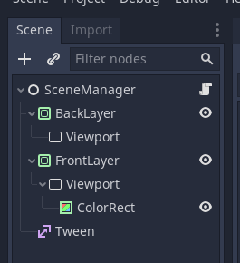

Godot 3 Tutorial: Scene Transitions
Publish date: Feb 19, 2022Tags: godot3 tutorials
In this tutorial I will tackle scene transitions in three steps of complexity. The first will be a simple fade to black. The second will use a wipe to black based on a shader, and the third and final one will be a wipe from one scene directly to the other.
Dummy Assets
To make this visually somewhat appealing I will be using the following two photographs by Peter Janzen for this tutorial.

Red-orange rose in detail
Photo by Peter Janzen (https://cc0.photo/2015/11/06/red-orange-rose-in-detail/)

Single apple blossom
Photo by Peter Janzen (https://cc0.photo/2015/11/06/red-orange-rose-in-detail/)
I also use a luma trasition texture as they are common in video editing. The one you can download from the mentioned link is in a file format Godot cannot use, but it can be opened in GIMP and saved as PNG there.

Horizontal Paint Brush Wipe
Luma texture by Roxanep, found at https://store.kde.org/p/1675120, licensed under Creative Commons Attribution
You can find all assets, scenes and finished code in the GitHub repository accompanying this tutorial: https://github.com/SelinaDev/02_Scene_Transitions
Preparation
If you are following along let me go over the initial setup I have, so you can work from the same starting point as I. I first created a folder called assets, where I put the three pictures shown above. Next I created a folder I called example_scenes. This folder will hold a few common files.
So let’s start populating this folder. Create a new scene, and as root node we choose “Other Node” and then choose a TextureRect. We will call it Background1, and save it under res://example_scenes/Background1.tscn. Now we click on the Layout button (the last option in the top bar) and select Full Rect, so it will cover the screen. Drag the Red-orange-rose-in-detail.jpg into the Texture slot in the Inspector, check Expand there, and set the Stretch Mode to Keep Aspect Covered. Next do the same with the other image and save that as Background2.tscn at the same location.
Next, in order to keep this more compact I want to create a reusable script for all the scenes. So we create a script called Scene.gd in example_scenes as well, and fill it with the following code:
extends Control
signal scene_change_requested(next_scene)
export (String, FILE, "*.tscn") var next_scene
func _process(_delta: float) -> void:
if Input.is_action_just_pressed("ui_accept"):
emit_signal("scene_change_requested", next_scene)
The export will allow us to select a next scene to transition to for each of
the scenes. Once we press the ui_accept action (which is per default mapped to the space bar as well as the enter key), the scene will emit a signal that will tell the nodes responsible for the scene transitions that they should change the scene, and where to.
With that out of the way, let us move on to the actual scene transitions.
Fade to Black
This first one is a popular choice, and very simple. I also want to point out that this is only adapted from another tutorial. This is how I learned it initially from this GDQuest Tutorial by Henrique Campos: https://www.gdquest.com/tutorial/godot/2d/scene-transition-rect/ I am using a slightly adapted version of that one, with the main difference being that I will use a Tween node instead of an AnimationPlayer (I am just really into parametric procedural animations).
So, to stay organized let us first create a folder called Stage1 in the project’s root directory. Now we create a new scene, choose “Other Node” as root again and now choose a CanvasLayer node as root node, which we will call SceneChanger1 (Usually I would just call it SceneChanger, but as I will show you multiple variants of these I will keep them distinct by numbering them for the sake of the tutorial). Set its Layer property to something high, like 100, so that it will be on top even if the scenes we attach it to use their own CanvasLayer nodes. We also add two children to it, a ColorRect and a Tween. Select the ColorRect node and again click Layout > Full Rect, and set its color to black. Save this scene at res://Stage1/SceneChanger1.tscn.
Now we add a script to the SceneChanger1 node, and call it SceneChanger1.gd. We will use the following script for the first version of this scene changer:
class_name SceneChanger1
extends CanvasLayer
export (String, FILE, "*.tscn") var target_scene
export (float) var fade_duration := 0.5
onready var color_rect: ColorRect = $ColorRect
onready var tween: Tween = $Tween
func _ready() -> void:
tween.interpolate_property(color_rect, "modulate:a", 1, 0, fade_duration)
tween.interpolate_callback(color_rect, fade_duration, "hide")
tween.start()
func transition_to(_next_scene := target_scene) -> void:
color_rect.show()
tween.interpolate_property(color_rect, "modulate:a", 0, 1, fade_duration)
tween.start()
yield(tween, "tween_all_completed")
get_tree().change_scene(_next_scene)
We export two variables. The target_scene is a default scene the scene changer should change to. We will not use it in this tutorial, as the scenes will tell the node what the next scene will be. But this can be useful if you for example have multiple menus, like a settings menu, that will only transition back to the main menu. In such a case you could set the scene changer itself to transition to the main menu, and then connect the “back” button’s “pressed” signal directly to the scene changer’s transition_to() method, without the need for any extra scripts.
The other exported variable is the fade_duration. This will be the duration of one fade, so the total scene change from starting to fade out to finishing fading in on the new scene will take twice that duration (plus loading time of the scene).
The _ready() function will create a fade-in. As this node will be attached to another scene, and therefore be loaded together with it, this will take care of the fade in part. The fade-in consists of the Tween node animating the alpha channel ColorRect’s modulate property from 1 to 0, i.e., from fully opaque to fully transparent. The tween will also call hide() on the ColorRect after the fade is complete, using interpolate_callback(). The reason is that the ColorRect will block mouse inputs if it is drawn on top of everything. the original GDQuest tutorial sets it up in a way that it will not, but I like if the player cannot interact with the scene while it is fading, so I let it block, but then hide it after the fade, so it will let mouse input through. It is up to you which variant you prefer.
The transition_to() function starts by doing the same fade in the opposite direction, so immediately showing the ColorRect again, then animating its modulate color’s alpha channel from 0 to 1. Afterward the function halts execution until the Tween is done using yield(tween, "tween_all_completed"). Once the tween is done and execution resumes we change the scene to the target scene as our last step.
The first scene changer is now complete, so let us put together some scenes to use it. Create a new scene with a Control node as root node and rename it to Scene1. Instance both Background1.tscn and SceneChanger1.tscn as child nodes. Add our Scene.gd script to the root node. Now save this at res://Stage1/Scene1.tscn. Let us also create a Scene2, using Background2.tscn instead, and save it at res://Stage1/Scene2.tscn. Once you have saved both of them you can go into each of them, select the root node and set its next_scene property to the opposite scene (so Scene1’s next scene is Scene2 and Scene2’s next scene is Scene1). This way we can change scenes back and forth for this example.
Now we are ready for a test run. Make sure you have Scene 1 selected, then click on Play Scene (or press F6). You should see the first scene fading in. Once you press space, it should fade out, and the other scene fade in. You can do this back and forth. With this working, let us see how we can replace this simple fade to black with something more visually interesting.
Complex Transition to Black
There are several ways to make a transition to or from black more interesting. You could get some geometric effects completely in a shader, but we will take inspiration from video editing and use a luma texture, a texture encoding the transition as a grayscale image. I will use a texture from https://store.kde.org/browse?cat=185&ord=latest. If you get one from there make sure you convert it to a file format usable by Godot, like PNG.
The texture encodes the progression of the transition as varying grayscale values. To make use of them we need a way to translate how far along we are in the transition to wheter or not a certain pixel should be transparent. We can do this using a shader. But first for our setup.
Let us start off by creating a new folder called Stage2 alongside Stage1 to keep things tidy. This scene changer will work very similarly to SceneChanger1.tscn, so duplicate it and rename the duplicate SceneChanger2.tscn and move it into the Stage2 folder. Now open SceneChanger2.tscn, and also rename the root node to SceneChanger2. Let us first take care of the shader. Click on ColorRect, then in the Inspector under Material create a New Shader Material in the Material property. In there create a New Shader in the Shader property. Clicking on that shader should open the shader editor at the bottom of the screen. There we input the following code:
shader_type canvas_item;
uniform sampler2D transition_effect;
uniform float progress: hint_range(0.0, 1.0) = 0.0;
uniform bool invert = false;
void fragment() {
float transition_value = texture(transition_effect, UV).r;
COLOR.a = float(transition_value <= progress) * float(!invert) + float(transition_value > progress) * float(invert);
}
The first line declares this as a canvas_item shader, as we are using 2D. Then we create three uniform variables. If you are unfamiliar with shaders, you can think of these as similar to exported variables in GDScript, so we can edit them from outside the shader, even from the editor. The transition_effect is a sampler2D, so a texture. This is where we will put the luma. progress is a value that will go from 0 to 1, indicating the animation progress. The last is a boolean variable called invert. While we could just reverse the animation for the fade-in, I felt that it looked better if we do the animation in the same direction twice, meaning for one direction we need to invert the meaning of the color values.
The fragment function, which runs for each pixel, will first get the value of the corresponding pixel from the luma texture. As it is grayscale we do not need all the channels, but can just use one to get the brightness of that pixel.
COLOR.a = float(transition_value <= progress) * float(!invert) + float(transition_value > progress) * float(invert);
This last line might seem a bit complicated, but it is actually just a conditional statement converted to math. The graphics card is not good at if-else-statements, so while we can use them in shaders it is good practice to avoid them if there is an alternative. This shader will do a hard edge, so we want to set the rendered alpha to either 0 or 1 in this line. We have two terms, one for the regular, non-inverted case, and one for the inverted case. float(invert) will evaluate to a float with the value 0 if invert is false and to 1 if it is true. float(!invert) will do the opposite. So if invert is set to false then the left term will be multiplied with a 1 (i.e., will not change), and the right term will be multiplied with a 0 (i.e., will be 0 overall and not contribute to the addition).
This means depending on whether or not the animation is inverted, we either check if the progress value is above the pixel’s brightness (float(transition_value <= progress)) or if it is lower (float(transition_value > progress)) respectively. This check will also be converted to a float that is either 0 or 1.
With this, the transition shader is complete. Click on the ColorRect node again, navigate to the Material property, where under the shader itself should now be a category Shader Param, which we open. Here we find the uniform variables from the shader’s code. Drag horiz_paint_brush.png from the assets folder into the slot of Transition Effect. Once this is done you can play around with the progress slider should already see the black ColorRect appear or disappear in a wiping motion. With the shader complete let us adapt the scene changer’s code to properly drive it.
On the SceneChanger2 first detach the script then create a new script at res://Stage2/SceneChanger2.tscn. This script will be similar to the previous one but different enough that I will go over it here once more. Here is the code:
class_name SceneChanger2
extends CanvasLayer
export (String, FILE, "*.tscn") var target_scene
export (float) var fade_duration := 1.5
onready var color_rect: ColorRect = $ColorRect
onready var tween: Tween = $Tween
onready var shader_material: ShaderMaterial = color_rect.material
func _ready() -> void:
shader_material.set_shader_param("invert", true)
shader_material.set_shader_param("progress", 0)
tween.interpolate_method(self, "_set_progress", 0, 1, fade_duration)
tween.interpolate_callback(color_rect, fade_duration, "hide")
tween.start()
func transition_to(_next_scene := target_scene) -> void:
color_rect.show()
shader_material.set_shader_param("invert", false)
shader_material.set_shader_param("progress", 0)
tween.interpolate_method(self, "_set_progress", 0, 1, fade_duration)
tween.start()
yield(tween, "tween_all_completed")
get_tree().change_scene(_next_scene)
func _set_progress(progress: float) -> void:
shader_material.set_shader_param("progress", progress)
First thing to mention is that we have a new onready variable, which caches a reference to the shader material, which we will use to set the shader’s parameters. Next I want to mention the new _set_progress() function at the bottom of the script. To set the shader’s parameters we need to call shader_material.set_shader_param(param, value), meaning the parameter’s name needs to be the first argument, and the target value the second. The Tween’s interpolate_method() will however only work on methods that take one value. We therefore wrap the set_shader_param() call in a method that does just that, so we can use it with the Tween.
The _ready() and transition_to() functions work mostly the same. As shaders are a Resource and their values are therefore shared / persistent across scenes we need to make sure to directly set them at the start of the animation, otherwise we may get flickering issues where we see the shader in an old state for a frame. Other than that we can simply animate the progress from 0 to 1 by using interpolate_method() on _set_progress().
With the scene changer finished let us build some test scenes again. This will be fairly similar to Stage 1. We create a new scene with a Control node as root, called Scene1. Again we add Background1.tscn and this time our new SceneChanger2.tscn as children. We add Scene.gd to Scene1 and save it at res://Stage2/Scene1.tscn. We also do the same for a Scene2 with Background2. Once both are saved we can set each scene’s Next Scene property to its respective opposite. With that done we make sure we are in Scene1 and click Play Scene again (or press F6). You should now see a scene fairly similar to the previous scene transition demo, but with the new transition effect.
This transition is hopefully even more appealing than the simple one, and arguably more flexible, as you can use it with any luma. If you experiment a bit you could also write your own shader to procedurally create a transition based on geometric shapes (like in the old Pokémon games). Such a shader can have the benefit of better scaling to various different aspect ratios. So you’d want to use a shader if, for example, you want to have squares in your transition, as a texture based shader would distort those (at least without some additional shader magic). Now that we have this more complex transition the next step I will show you is a direct transition without the immediate blank screen. Due to the complexity we will need a slightly different approach than for the last two.

Complex Transition directly to the Next Scene
Both these previous two scene transitions have the fade to back (or a color of your choice) in common. This makes it easy to mask the actual scene change in the middle of the transition. Depending on your system and the size of the scene you’re loading you might experience a bit of a delay, i.e., the transition takes longer than just the time for fade out and fade in, due to the added time of loading the scene. However, I would argue that unless it takes a long time (more than ten seconds or so), then players will understand that this visual language as an indicator for loading a new scene, so we should be good. What also makes these previous two transitions useful is the way we can just attach them to existing scenes and have everything work.
As mentioned above we need a way to have both scenes coexist. Furthermore, in order to transition from one scene to the other we need a way to manipulate the final render of one scene. For these reasons we will create a scene manager that will hold our scenes in Viewport nodes, which will also allow us to switch between arbitrary scenes without complications (e.g., we can switch from a 2D to a 3D scene).
So let us create a new scene, choose Other Node as base and select a plain Node, which we rename to SceneManager. We create three children: a ViewportContainer which we call BackLayer, another one which we call FrontLayer, and lastly a Tween. For both ViewportContainers we select Layout > Full Rect, and make sure the Stretch property is checked. Then we add one Viewport as a child of each ViewportContainer. The only thing we change in our case is to set the property Rendering > Usage to 2D on each of the Viewports. Lastly, we add a ColorRect to the FrontLayer’s Viewport, set its color to black, and set the Right and Bottom Anchor properties to 1 (this is equivalent to setting the Layout to Full Rect, which Godot does not give us the option to do directly in this case).

Save the SceneManager at res://Stage3/SceneManager.tscn. Again we will need to create a shader. Go to the FrontLayer’s Material property, and again add a mew ShaderMaterial. Create a New Shader in its Shader property. This shader works very similar to the last one, but as we do not need to reverse any fade, but do the transition all at once we do not need to invert anything anymore. So here is the code for this next shader:
shader_type canvas_item;
uniform sampler2D transition_effect;
uniform float progress: hint_range(0.0, 1.0) = 0.0;
void fragment() {
float transition_value = texture(transition_effect, UV).r;
COLOR.rgb = texture(TEXTURE, UV).rgb;
COLOR.a = float(transition_value >= progress);
}
One addition is that we need to read out the rendered texture and manually set the rgb components of the rendered color. Clich on the FrontLayer node again, navigate to the Material and open the ShaderParam category. Here, we need to drag the luma texture into the slot of Transition Effect again. Now save the scene again let us add a script to the SceneManager, which we will save at res://Stage3/SceneManager.gd. While it is not terribly long it needs some explanation, so I will go through it step by step. The top of the script starts with the following code:
class_name SceneManager
extends Node
export (String, FILE, "*.tscn") var start_scene
export (float) var duration := 2.0
onready var back_viewport: Viewport = $BackLayer/Viewport
onready var front_viewport: Viewport = $FrontLayer/Viewport
onready var front_scene: Node = $FrontLayer/Viewport/ColorRect
onready var shader_material: ShaderMaterial = $FrontLayer.material
onready var tween: Tween = $Tween
The way this will work is that we will add a new scene to the back_viewport, then make the FrontLayer gradually transparent via its shader_material, animating it with the tween. Once that is done, we remove the old front_scene from the front_viewport, move the new scene there and save in in front_scene, so we can insert another scene behind it for the next transition (and we cache it so we can easily queue it free later). In order to allow us to add any scene, regardless of 2D, 3D, or even with some other node as root, we use Node as type hint for front_scene.
We need to set this system up with an initial state. We do two things for this. As there is no scene to request a next scene we export a path to an initial scene. Also, we do not have a proper scene to transition away from. This is what the ColorRect is for, and why we are caching it in front_scene. When we start this Scene Manager the screen will be the color of the ColorRect. The start_scene will then be loaded and be revealed behind the ColorRect. Now let us look at the meat of this script, the _change_scene() function:
func _change_scene(next_scene: String) -> void:
var back_scene: Node = load(next_scene).instance()
back_viewport.add_child(back_scene)
tween.interpolate_method(self, "_set_transition_progress", 0, 1, duration)
tween.start()
yield(tween, "tween_all_completed")
back_viewport.remove_child(back_scene)
front_scene.queue_free()
front_scene = back_scene
front_viewport.add_child(front_scene)
shader_material.set_shader_param("progress", 0)
front_scene.connect("scene_change_requested", self, "_change_scene")
This function directly implements the process detailed above. We load the next scene as back_scene and add it as a child of back_viewport. We then interpolate the method _set_transition_progress (which we still have to write, so do not worry if you get an error at this point) from 0 to 1 over our exported duration. We then wait for the tween to finish using yield. After the transition is complete, we know that the front_scene is no longer visible, so now we can make the switch. We remove the back_scene from the back_viewport again, and queue_free() the current front_scene. We save the new scene, stored in back_scene as the new front_scene and insert it as child of the front_viewport. At this point the front_viewport is not visible, so we have to set the shader_material’s progress parameter to 0 again, making it visible again with our new scene. All this is happening within a single frame, so we do not need to worry that this will cause any flickering. The last thing to do is to set up the next transition. For this we expect our scenes to implement a scene_change_requested signal that gives us the path of the next scene. We connect() this signal directly to the _change_scene() function.
The only thing left in this script now are the following two functions:
func _ready() -> void:
shader_material.set_shader_param("progress", 0)
_change_scene(start_scene)
func _set_transition_progress(progress: float) -> void:
shader_material.set_shader_param("progress", progress)
The _ready() function simply ensures that the shader starts off in the right state, and then transitions to the first scene. The _set_transition_progress() works exactly like described in the last transition.
We now have the SceneManager completed and ready to go. We only need some scenes to fill it, so we will create some demo scenes again. You are probably familiar with this by now. Create a new scene with a Control node as root and name that Scene1. Drop in Background1.tscn as its child, and Scene.gd as script. Then save it at res://Stage3/Scene1.tscn. Do the same again but name it Scane2, use Background2.tscn as child and save it at the same location but as Scene2.tscn. Once both are saved select each scene’s counterpart as its Next Scene property, then go back to the SceneManager scene and set the new Scene1.tscn as the start scene. Save all the scenes. The scenes should now be set up. This time we do not start the demo from Scene1, but from the SceneManager. So select it, and click Play Scene (or press F6). Now our scene manager should play, starting off with a blank screen and then revealing scene one. After that we can again press space or enter to trigger the transition to the next scene.

Conclusion
In this tutorial we created three different scene transitions. As mentioned, the last, direct transition might require some extra work to get working properly, as it does not nicely mask the loading of the new scene. However, I do hope that you find these scenes useful. You can find the finished project on my GitHub: https://github.com/SelinaDev/02_Scene_Transitions.
If you have questions, noticed an error, or just want to say hi, you can find me on Twitter @SelinaDev, or drop by my Discord.